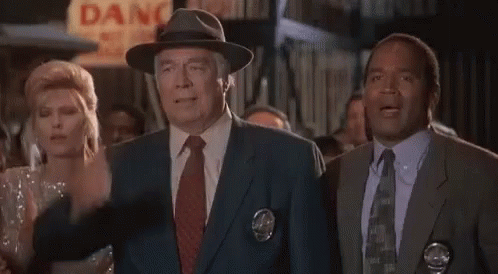

Hi, Nice to meet you!
📜My full name is Kniledge Johns, but typically my friends call me Lone so feel free to do so as well! I started coding while in college and had no prior exprience before that! In the picture to the right you can see I played rugby in college, that also was with no prior exprience as well. If there was was one thing I considered myself to be: "I'm a stickler for starting at ground zero." I love to start with no exprience and grow by doing it hands-on.
🏉Now to explain how did I get involved with rugby, like any college freshman you get bored and try things! I got got contacted by the team before I even stepped a foot on campus, a few messages back and forward and I finally attend a practice with no cleats...
so i ran bare foot the whole practice and towards the end we scrimaged after me just learning the basics. I got the ball and ran faster than if my mom was behind and I just got caught digging in her pot.